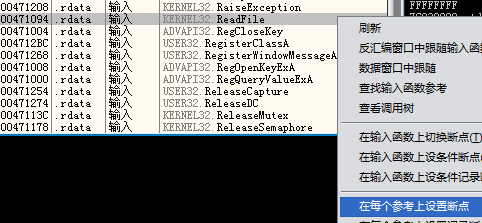
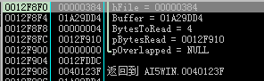
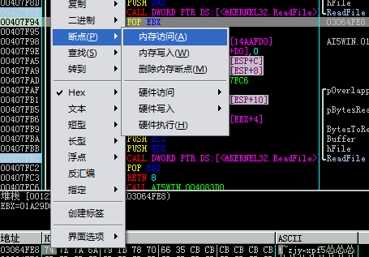
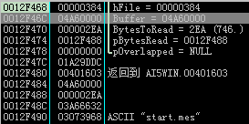

《同级生1》DMM版（即Original版）是2007年3月1日由DMM发行的《同级生》复刻版，似乎DMM发布的elf游戏都采用了新的系统，加密方式和原来的win版有所不同，使用目前网络上流行的游戏文件提取工具（如mlist3等）均无法提取本版本游戏的文件，于是只能手动逆向调试进行文件提取。按照elf游戏的一贯做法，脚本文件都被打包在mes.arc文件中。采用调试器OllyDBG v1.10，操作系统为Windows XP。
关于od的基本使用方法不再赘述，这里只记录主要解密过程。
1、启动调试器，运行AI5WIN.exe，给ReadFile函数下断点：

然后按F9运行程序，直到ReadFile第一次断下mes.arc：

此时可以记下句柄号。
2、继续运行程序，直到直到ReadFile第二次断下mes.arc，在数据窗口中查看Buffer的地址，并在第一个字节上设置内存访问断点：

继续运行程序直到命中刚才的内存访问断点，此时所在的代码段就是对mes.arc的文件头进行解密的代码，其中包括了被打包的脚本文件的文件名、文件长度和在mes.arc中的偏移量，核心部分如下：
……
00401A10 > 309C08 FCFEFF>XOR BYTE PTR DS:[EAX+ECX-104],BL
00401A17 . 83C1 01 ADD ECX,1
00401A1A . 81F9 00010000 CMP ECX,100
……
00401A22 . 8170 FC 8B5F5>XOR DWORD PTR DS:[EAX-4],A25D5F8B
00401A29 . 8130 69A7FEA9 XOR DWORD PTR DS:[EAX],A9FEA769
……
这一段汇编没有任何难度，首先是对文件名xor 0x35，最大长度0x100个字节，然后对文件长度xor A25D5F8B，最后对文件偏移xor A9FEA769。至于为什么能确定第一个是长度、第二个是偏移，这个只要观察连续两个文件的信息就能看出，偏移量的改变比较会小而且是递增的。
3、继续运行程序，直到直到ReadFile第三次断下mes.arc，这次就是读入具体的脚本文件了，游戏启动第一次读取的文件是start.mes：

在数据窗口中查看Buffer的地址，并在第一个字节上设置内存访问断点，运行程序等待断点命中，此时我们就找到了解密脚本文件的代码。这段代码比较复杂，本质上是个解压缩的算法，我们到下一篇文章中再探讨。
在写解包器的程序时，我们可以直接把这段汇编拿过来用，不必一定改写成高级语言的形式。在我写的解包器中，核心解密函数的代码如下：
{
g_bufSrt = srt;
g_lenRaw = len;
g_bufDst = dst;
_asm
{
mov ebx, g_bufSrt;
xor eax, eax;
push ebp;
xor ebp, ebp;
xor esi, esi;
sub esp, 0x2000;
mov edi, esp;
mov ecx, 0x2000;
rep stos;
}
__asm
{
cmp g_lenRaw, eax;
mov edi, 0x0fee;
je ai5win_0042c404;
jmp short ai5win_0042c344;
jmp short ai5win_0042c340;
lea ecx, dword ptr ds:[ecx];
ai5win_0042c340:
mov eax, dword ptr ss:[esp+0x10];
ai5win_0042c344:
shr eax, 0x1;
test eax, 0x100;
mov dword ptr ss:[esp+0x10], eax;
jnz short ai5win_0042c363;
mov al, byte ptr ds:[esi+ebx];
movzx eax, al;
add esi, 0x1;
or eax, 0x0ff00;
mov dword ptr ss:[esp+0x10], eax;
ai5win_0042c363:
test byte ptr ss:[esp+0x10], 0x1;
je short ai5win_0042c38c;
mov al, byte ptr ds:[esi+ebx];
mov edx, g_bufDst;
movzx eax, al;
mov byte ptr ss:[esp+edi+0x1c], al;
mov byte ptr ds:[edx+ebp], al;
add edi, 0x1;
add esi, 0x1;
add ebp, 0x1;
and edi, 0x0fff;
jmp short ai5win_0042c3f5;
ai5win_0042c38c:
mov dl, byte ptr ds:[esi+ebx];
mov al, byte ptr ds:[esi+ebx+0x1];
add esi, 0x1;
movzx ecx, al;
mov eax, ecx;
and eax, 0x0f0;
movzx edx, dl;
shl eax, 0x4;
or eax, edx;
and ecx, 0x0f;
add esi, 0x1;
add ecx, 0x2;
mov dword ptr ss:[esp+0x18], ecx;
mov edx, 0x0;
js short ai5win_0042c3f5;
lea esp, dword ptr ss:[esp];
ai5win_0042c3c0:
mov ebx, g_bufDst;
lea ecx, dword ptr ds:[edx+eax];
and ecx, 0x0fff;
movzx ecx, byte ptr ss:[esp+ecx+0x1c];
mov byte ptr ss:[esp+edi+0x1c], cl;
add edi, 0x1;
mov byte ptr ds:[ebx+ebp], cl;
add edx, 0x1;
add ebp, 0x1;
and edi, 0x0fff;
cmp edx, dword ptr ss:[esp+0x18];
jle short ai5win_0042c3c0;
mov ebx, dword ptr g_bufSrt;
ai5win_0042c3f5:
cmp esi, g_lenRaw;
jnz ai5win_0042c340;
mov eax, ebp;
ai5win_0042c404:
mov ecx, dword ptr ss:[esp+0x101c];
}
__asm
{
add esp, 0x2000;
mov g_lenDecode, ebp;
pop ebp;
}
return g_lenDecode;
}
函数参数分别为解密前数据的地址、长度和解密后数据的地址（要求事先分配好足够空间），函数返回值为解密后数据的长度。
在下一篇文章中会解释这段汇编代码的原理，以及如何设计封包算法。
» 转载请注明来源及链接：未来代码研究所